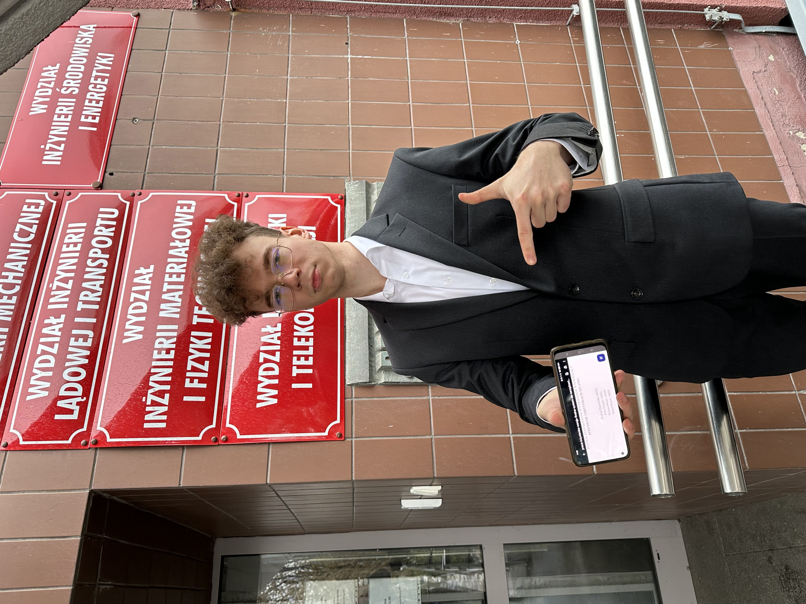

WELCOME TO THE HOMEPAGE OF
BARTOSZ DEMUT
Hi! I'm a profesional cache invalidator and Android Studio restarter, amateur musician, low elo gamer, and clearly an expert web designer.
 Work
Work
Since mid 2021 I've been a part of allegro.pl - the biggest e-commerce company in Poland,
working on an Android app which millions of people use to shop online, as well as building a new app for smartwatches.
I've also worked on the backend for a bit and did some iOS development.
School
I've graduated from Poznań University of Technology with an engineering (bachelor's) degree in Computer Science.
For my thesis I've worked on an Android app that was a part of a Visit Management System. The idea behind the system was to
allow companies to monitor activity inside their office building (which is needed for certain security certifications), while being easy to use and offering additional features for the employees and guests.

This is me! I didn't have my thesis printed out, so I posed with a pdf opened on my phone.
App
Before I got my first job, I created a document management app for Android devices. I still use it as my go-to document manager for my phone, and work on it in my spare time.